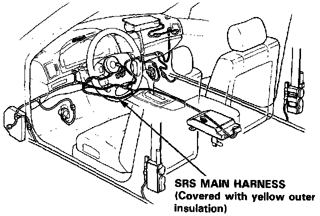
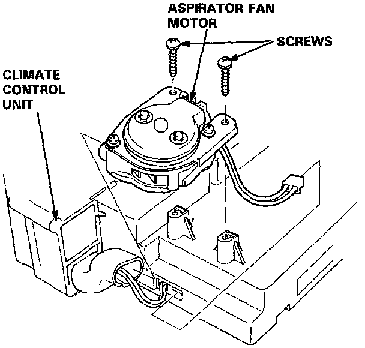

Aspirator: Service and Repair
CAUTION:- All SRS wiring harnesses are covered with yellow outer insulation.
- Before disconnecting any part of the SRS wire harness, install the short connectors.
- Replace the entire affected SRS harness assembly if it has an open circuit or damaged wiring.

1. Remove the climate control unit.
NOTE: The L and LS model radios may have a coded theft protection circuit. Be sure to get the customer's code number before:
- Disconnecting the battery.
- Removing the No. 56 (7.5A) fuse in the under- hood fuse/relay box.
- Removing the radio.
After service reconnect power to the radio and turn it on. When the word "CODE" is displayed, enter the customer's 5-digit code to restore radio operation.

2. Disconnect the aspirator fan connector as shown.
3. Remove the mounting screws, then remove the aspirator fan motor.